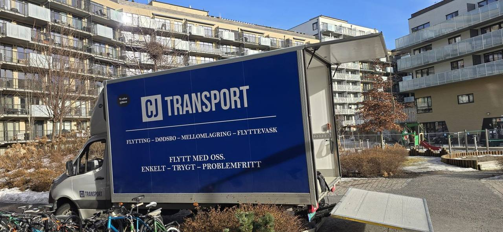

Hjem/Privatflytting
Privatflytting i Oslo og Akershus
Fra hybel til enebolig. Vi pakker det som skal pakkes, bærer det som skal bæres, og leverer på avtalt tid – med fast pris avtalt på forhånd.

Det praktiske
Hva som er med, og hva du slipper
Standardprisen dekker mannskap, lastebil og transport av møbler og esker, samt grunnleggende beskyttelsesmateriell. Pakking, demontering og flyttevask kan legges til – du velger hvor mye du vil gjøre selv.
- To eller flere flyttefolk med erfaring fra bolig.
- Lastebil med heis, så tunge møbler slipper å bæres i trapper.
- Beskyttelse av dører, karmer og gulv i begge ender.
- Demontering og montering av senger og store møbler.
- Merking av esker rom for rom.
- Bortkjøring av emballasje etterpå.

Pris etter størrelse
Slik ser en typisk flytting ut
Veiledende priser med to flyttefolk. Endelig pris settes etter befaring, og den står fast når den er gitt.
| Bolig | Folk | Tidsbruk | Fra-pris |
|---|---|---|---|
| Ettromsleilighet | 2 | 2–3 timer | 4 000 kr |
| Toroms leilighet | 2 | 3–4 timer | 6 000 kr |
| Treroms leilighet | 2–3 | 4–7 timer | 8 000 kr |
| Enebolig | 2–4 | Hel dag | 15 000 kr |
Prisen påvirkes av etasje, heis, bæreavstand, avstand mellom adressene og tilleggstjenester som pakking eller demontering. Les mer om hva som påvirker prisen.
Tre ting folk glemmer
Vi tar de kjedelige bitene også
Grundig vask av gammel bolig
Vi vasker etter at møblene er ute, og du slipper å komme tilbake til en halvferdig leilighet. Kombiner med flyttingen, så blir det én reise for oss og én bekymring mindre for deg.
Diskret og respektfull tømming
Vi tar oss av alt som skal tømmes, sorterer det som kan gis bort, og leverer til gjenvinning. Du får en fast sum og slipper å være til stede hele dagen.
Når datoene ikke møtes
Skal du ut før du kan inn? Vi mellomlagrer møbler og esker i moderne, tørre lokaler og leverer videre den dagen du er klar.
Flyttesjekkliste
Det du bør gjøre før vi kommer
- Si opp leiligheten i tide – oppsigelsestiden er ofte tre måneder.
- Endre adresse hos Posten og i folkeregisteret.
- Avtal strømovergang i begge boliger.
- Bestill flyttebyrå og bekreft datoen skriftlig.
- Pakk og merk det du vil ta med selv i bilen.
- Sett av tid til rengjøring av gammel bolig.
Klar for en flyttedag uten overraskelser?
Ring oss eller send en forespørsel, så avtaler vi en gratis befaring i Oslo eller Akershus.